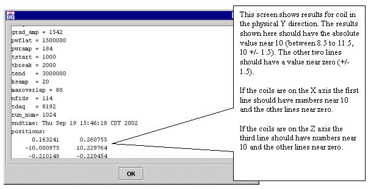

- 00000018WIA30737E20GYZ
- id_131058623.1
- Oct 11, 2021 8:47:14 PM
Grafidy 3 Procedure
Prerequisites
| Required persons | Preliminary requirements | Procedure | Finalization |
|---|---|---|---|
| 1 | Not Applicable | 3 to 6 hours | Not Applicable |
| Item | Quantity | Effectivity | Part number | Manufacturer |
|---|---|---|---|---|
| One of the following Grafidy kits | 1 | - |
46-271417G1 - 1.5T 46-307164G1 - 1.5T 46-307164G2 - 1.5T 46-307164G3 - 1.0T, 1.5T 46-307164G4 - 1.0T, 1.5T 46-307164G6 - 1.0T | - |
| Grafidy Base Plate | 1 | - |
46-271410G1 | - |
| ||||||||||||
| Condition | Reference | Effectivity |
|---|---|---|
|
Grafidy 3 Equipment Setup and Prescan Check are complete. | - | - |
About this task
Grafidy 3 will require 3 hours for a BRM system and 6 hours to complete both WHOLE and ZOOM on a TwinSpeed System.
IMPORTANT! Perform an L-Coil Calibration before starting the Grafidy 3 Procedure: From the Calibration menu, select L-Coil Calibration. Click the selection to start the tool. The calibration runs automatically.
Start-Up and Zeroing Values
Procedure
- Use default short time constant cal values rather than calibrating
short TC on a system-by-system basis. When you click either “auto
mode” or “manual mode” (first time per tool invocation),
the tool will check whether the short TC cal values are the same as
the default values. If not, the Grafidy 3 tool will display a message
asking if you want to use Default Shorts Cal Values. Answer Yes. See Figure 4.
Figure 4. Default Short Cal Values Popup 
By default, short time constant eddy current are not calibrated. Instead, a set of default calibration values are used. Those values depend on a gradient coil (brm/crm/trm_whole/trm_zoom) and gradient driver (ACGD/ACGD_Lite) combination. Grafidy 3 will check/load proper short TC cal values based on the system configuation.
Calibration Scans
Procedure
- Position the coils in the magnet bore for the axis to be calibrated.
A diagram of proper coil positioning can be viewed from the menu bar
under Setup by selecting the axis that will
be calibrated. See Figure 5.
Figure 5. Setting Axis to Calibrate 
- Click More to show coil positions, spec
values, target values and measured values. See Figure 9 and Figure 10. You will need to
scroll UP to get to the position values.
Figure 9. Coil Position 
Figure 10. Stem Specs, Target and Measured Values 
Finalization
Finalization
No finalization steps.